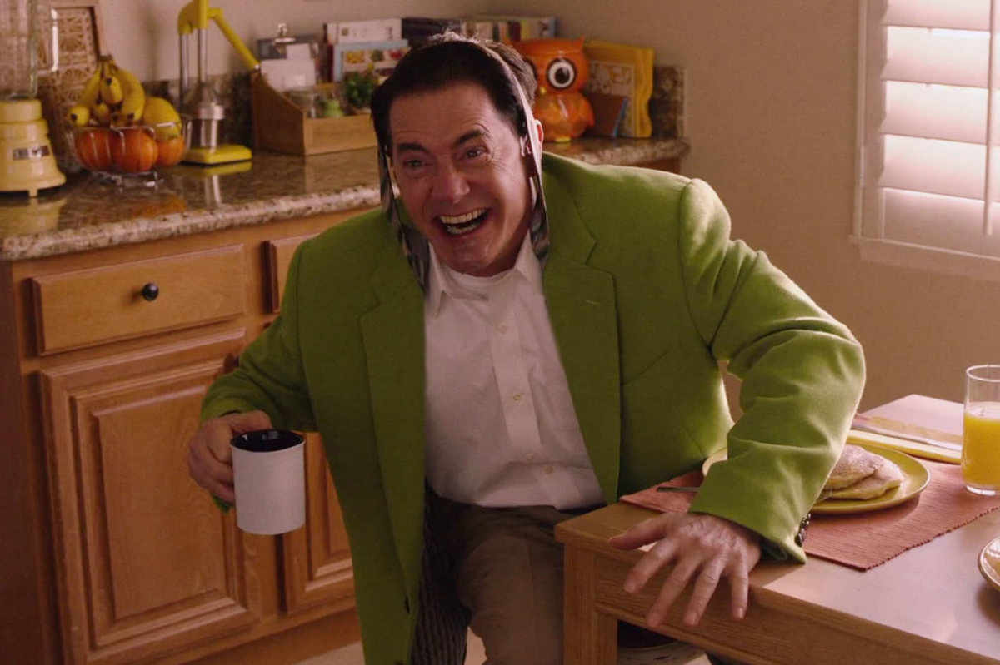

In the early 1990s, residents of the quaint northwestern town of Twin Peaks were stunned by the murder
of homecoming queen Laura Palmer. Twenty-five years later, Special Agent Dale Cooper, who investigated the student's death,
heads out on an odyssey that returns him to the Washington town. Creator David Lynch directs all 18 episodes of this
long-awaited follow-up to the cult classic series that originally aired from 1990-91 and spawned the 1992 prequel film,
Twin Peaks: Fire Walk With Me.
Part 1
My log has a message for you.
May 21, 2017
Laura Palmer whispers to Agent Cooper in the Black Lodge.
Dale Cooper remains trapped in the Black Lodge. In Twin Peaks, Dr. Jacoby
receives a shipment of shovels. At the Great Northern, Ben Horne introduces his brother Jerry to his new secretary,
Beverly. Deputy Chief Hawk gets a call from the Log Lady, who tells him some evidence relating to Dale Cooper is missing.
In New York City, Sam Colby sits in a warehouse watching a glass box. Tracey Barberato visits him. With the security
guard absent during Tracey's second visit, Sam lets her into the room. As they have sex, a pale androgynous entity
materializes in the glass box and murders them. In Buckhorn, South Dakota, Cooper's doppelgänger—a sinister, long-haired
man with black irises—retrieves two associates, Ray and Darya. Police find the severed head of Buckhorn librarian Ruth
Davenport placed on the headless body of a John Doe. Local principal Bill Hastings's fingerprints are found and he is
arrested. Bill denies guilt, but fumbles his alibi.
Part 2
The stars turn and a time presents itself.
May 21, 2017
A horrifying entity appears in the glass box.
Bill Hastings's wife, Phyllis, accuses him of having an affair, while Phyllis has
been having an affair with Bill's lawyer, George. A ghostly entity occupies another cell. Phyllis is murdered at home by
Cooper's doppelgänger. Attempting to obtain information through Darya, Ray, and another associate, Jack, Cooper's
doppelgänger perceives that his associates have turned on him. He murders Jack and Darya, learning that the three were
hired to kill him. He reveals that he is due to return to the Black Lodge, but has a plan to avoid this. In the Black
Lodge, Cooper encounters Laura and Leland Palmer, MIKE, and an evolved form of The Man from Another Place, now a skeletal
tree with a featureless head. It tells Cooper that he cannot leave before his doppelgänger has returned, but the tree's
doppelgänger intervenes. The floor of the Black Lodge gives way and Cooper falls into the glass box in New York, then into
space. In Twin Peaks, Hawk continues his investigation into the Log Lady's cryptic words, and James Hurley shares a
nostalgic moment with Shelly Johnson at the Roadhouse.
Part 3
Call for help.
May 28, 2017
Naido attempts to warn Cooper.
Cooper lands in a metal building where two women appear to protect him from an unseen
entity. Cooper's doppelgänger becomes sick while driving and crashes. Cooper finds a portal and swaps places with a second
Cooper doppelgänger, Dougie Jones, who just had sex with Jade, a Las Vegas prostitute. In the Black Lodge, MIKE tells Dougie
that he was manufactured for a purpose that has been fulfilled. Dougie turns into a tiny gold bead and MIKE takes his ring.
Cooper is found in a disoriented state by Jade, who mistakes him for Dougie and drops him off at a casino. As he wanders in
a state of confusion, he plays slot machines indicated with hallucinatory images of the Black Lodge, winning megajackpots
every time. At the Twin Peaks Sheriff's Department, Hawk, Andy and Lucy are unable to discern what is "missing". At the FBI
headquarters in Philadelphia, Agent Tamara Preston is debriefing Gordon Cole and Albert Rosenfield when Cole receives a phone
call stating that Cooper has been found in South Dakota.
Part 4
...brings back some memories.
May 28, 2017

Hi!
Cooper wins 28 consecutive megajackpots at the casino, totaling $425,000, then is driven
to Dougie's home. Dougie's wife, Janey-E, is upset about her husband's three-day disappearance, but she is relieved that they
can pay his $20,000 gambling debt ($52,000 after interest). Still near-catatonic, Cooper settles into life as Dougie. While
getting dressed, he sees a vision of MIKE, who informs him that either he or his remaining doppelgänger must die. At the Sheriff's
Department, Sheriff Frank Truman gets an update on Hawk's investigation, and Deputy Bobby Briggs recalls that Cooper was the last
person to see his father, Major Garland Briggs, before his death. Andy and Lucy's son Wally Brando arrives at the Sheriff's Office
to pay his respects to his sick godfather, Harry. Gordon meets with FBI Chief of Staff Denise Bryson before heading to South
Dakota with Albert and Tamara to see Cooper. Cooper's doppelgänger claims he has been working undercover for Special Agent
Philip Jeffries. Gordon and Albert discuss their misgivings about Cooper, and decide to seek the one woman they think can help them.
Part 5
Case files.
June 4, 2017
Doppel Cooper confirms that BOB is still with him.
Janey-E drops Cooper at Dougie's workplace, where he reacts to a statue outside, the smell
of coffee, and the words "agent" and "case files". After a light illuminates a colleague's face, Cooper accuses him of lying,
angering his boss. The young boy who lives across the street from where Dougie's car is parked goes over to investigate it, when
a group of thugs break into it, causing an explosion. The Mitchums beat and fire the casino supervisor, accusing him of complicity
in Cooper's winning streak. Jade drops Cooper's Great Northern Hotel room key in a mailbox. In Twin Peaks, Shelly lends money to
her daughter Becky, who leaves with her husband and takes cocaine. Dr. Jacoby broadcasts conspiracy theory videos to sell his
golden shovels, with Jerry Horne and Nadine Hurley among his viewers. Cooper's doppelgänger makes a phone call in prison that
causes the security system to go haywire. In Buckhorn, an autopsy of the decapitated body reveals Dougie's wedding ring in the
stomach. At the Pentagon, Colonel Davis is informed that the fingerprints on the Buckhorn body match Garland Briggs's – the
sixteenth set of his prints they have found in 25 years.
Part 6
Don't die.
June 11, 2017
Even in a near catatonic state, Cooper enjoys his coffee.
Police take Cooper to Dougie's home and Janey-E receives a photo of Dougie with Jade.
Cooper draws cryptic images on Dougie's case files, guided by lights on the pages. Dougie's boss recognizes a pattern in the
drawings and thanks Cooper. Cooper has another vision of MIKE telling him to wake up. Janey-E meets the two criminals demanding
$52,000 from Dougie and gives them $25,000, calling it her "only offer." Duncan Todd receives a message on his laptop and pulls
an envelope marked with a black spot from his safe. Hitman Ike "The Spike" Stadtler receives an identical envelope containing
photos of Dougie and Lorraine, and kills Lorraine and her coworkers. Albert finds Diane, Cooper's assistant, in a bar. In Twin
Peaks, Richard Horne meets drug supplier Red. He speeds recklessly in his truck, running over and killing a young boy. Carl
Rodd witnesses the incident and attempts to comfort the boy's mother. Hawk drops a coin in the bathroom and sees that the stall
manufacturer's logo is a Nez Percé chief. Noticing two screws missing from the stall door, he finds several written pages inside.
Part 7
There's a body all right.
June 18, 2017
Diane questions the man claiming to be Cooper.
Hawk and Frank Truman examine the pages torn from Laura's diary. One entry describes a
dream in which Annie tells Laura that the good Dale is trapped in the Lodge. Frank calls Doc Hayward, who recounts his memories
of the day Cooper returned from the Lodge. Lt. Knox arrives in Buckhorn and is stunned to learn that Garland Briggs's fingerprints
come from a body in its late forties, not seventies. Albert and Gordon convince Diane to speak to Cooper in prison. She is upset
by the conversation and tells Gordon the man is not Cooper. Andy arranges to meet the farmer who owns the truck driven by Richard
Horne in the hit-and-run, but he never arrives. Cooper's doppelgänger blackmails Warden Murphy into releasing him and Ray. Police
visit Cooper at Dougie's workplace to question him about Dougie's destroyed car. As he leaves with Janey-E, Ike runs at them with
a gun, but Cooper expertly disarms him as the Man from Another Place appears urging him to "squeeze his hand off". Beverly tries
to locate the source of a mysterious hum in Ben Horne's office, then returns home to her terminally ill husband, Tom.
Part 8
Gotta light?
June 25, 2017
Woodsmen swarm a convenience store.
Ray shoots Cooper's doppelgänger. Ghostly men tear at his body, revealing a sac with
BOB's face. Ray flees, leaving Jeffries a message that the doppelgänger may have survived. Later, the doppelgänger awakens. In
1945 New Mexico, the first atomic bomb is detonated. A convenience store is occupied by ghostly men. Floating in a void, an androgynous
being spews a stream of fluid; one globule manifests BOB's face. In a building above a purple sea, the Giant watches the detonation,
the convenience store, and BOB. He levitates, light emanating from his head. Señorita Dido enters, and an orb with Laura Palmer’s
face inside floats down to her. She sends the orb to Earth. In 1956 New Mexico, a creature hatches from an egg. A woodsman descends
to the ground, then enters a radio station and kills the receptionist. Overpowering the disc jockey, he repeatedly broadcasts the
words "This is the water and this is the well. Drink full and descend. The horse is the white of the eyes and dark within," rendering
listeners unconscious. The creature enters an unconscious girl's room and climbs into her mouth. The woodsman kills the disc jockey
and leaves.
Part 9
This is the chair.
July 9, 2017
Gordon and Diane observe as Tammy questions Hastings.
Cooper's doppelgänger arrives at the farm, where he meets Hutch and Chantal, who have killed
the farmers. He sends a text message to Diane and calls Duncan Todd to ask if a job has been done. He orders the warden killed and
drives away. The Las Vegas police discover no record of Dougie Jones before 1997, and take fingerprints from his coffee mug. They
arrest Ike "the Spike". Jerry Horne hallucinates in the woods. Johnny Horne is found seriously injured. Bobby visits his mother
with sheriff Truman and Hawk to ask about Cooper; she tells them her husband long ago foretold their arrival. She gives them a small
metal cylinder containing instructions about a location, date, and Cooper's name, written twice. The FBI stops in Buckhorn to examine
the body of Major Briggs. Tammy questions Hastings, who says he and Ruth visited Briggs in another another dimension, where he had
been hibernating for years, and witnessed his beheading while someone said the name Cooper. His lawyer is arrested for the murder of
his wife. At the Bang Bang Bar, a girl scratches a serious rash.
Part 10
Laura is the one.
July 16, 2017
Margaret, 'The Log Lady,' tells Hawk that 'Laura is the one.'
Richard Horne confronts Miriam, who tells him she has written to Sheriff Truman about the
hit-and-run. He kills her, turns on the gas and lights a candle in her trailer, then has Deputy Chad intercept the letter. The
Mitchums see a news story about Ike's arrest, and recognize Cooper as "Mr. Jackpots". After noticing Cooper's physique, Janey-E
has sex with him. Nadine Hurley watches Dr. Jacoby's latest broadcast from her drapery store. Richard attacks his grandmother Sylvia
in her home and robs her. She calls Ben and demands money from him. Duncan Todd orders Anthony Sinclair to frame Dougie for the
denial of an arson insurance claim that lost the Mitchums $30 million. Gordon has a vision of Laura. Albert informs him that the
FBI has intercepted a text message from Diane informing someone of Hastings' arrest. Tammy shows them a photo that places Cooper's
doppelgänger at the location of the New York murders. Hawk receives another call from the Log Lady, who tells him "Laura is the one."